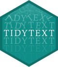
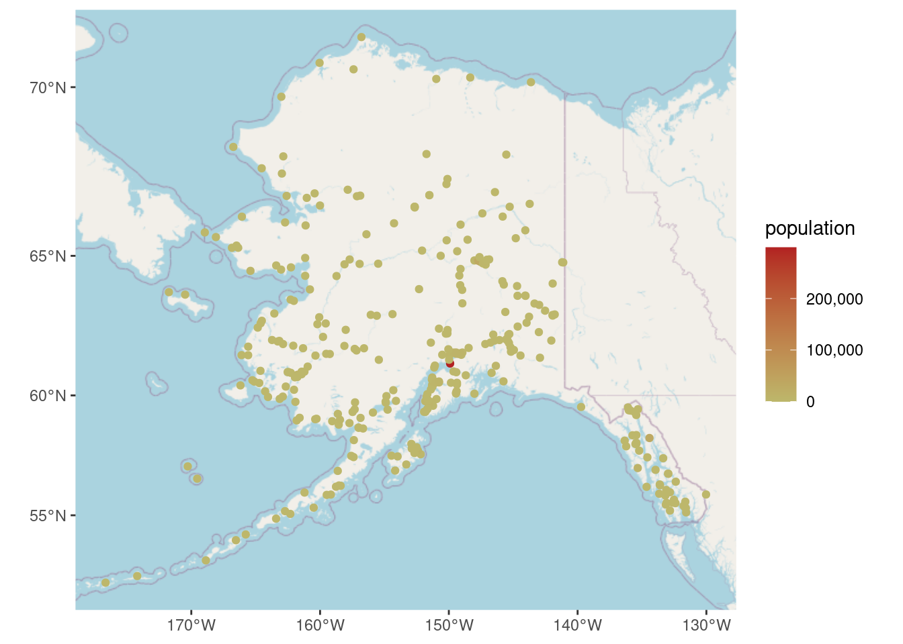

library(dplyr) # wrangle data
library(ggplot2) # plot data
library(tidytext) # text mining using tidy tools
library(gutenbergr) # access public domain texts from Project GutenbergLearning Objectives
- Describe principles of tidy text data
- Employ strategies to wrangle unstructured text data into a tidy text format using the
tidytextpackage - Describe non-tidy text formats and how to convert between tidy text and non-tidy text formats
- Become familiar with text analysis (or text mining) methods and when to use them
Acknowledgements
This lesson has been adapted from the following resources:
- Welcome to Text Mining with R by Julia Silge and David Robinson. Julia and David are also the developers of the
tidytextpackage. - Section 7.3: (R-) Workflow for Text Analysis from Computational Social Science: Theory & Application, Version: 17 June, 2021 by Paul C. Bauer
13.1 What is text data?
Text data is information stored as character or string data types. It comes in various different forms including books, research articles, social media posts, interview transcripts, newspapers, government reports, and much more.
13.1.1 How do we talk about text data?
Here is a list of text data or text analysis terms we’ll be referring to throughout this lesson. Note this is not a comprehensive list of text analysis terms that are used beyond this lesson.
| Term | Definition |
|---|---|
| String | Specific type of data whose values are enclosed within a set of quotes. Typically values or elements are characters (e.g. “Hello World!”). |
| Corpus (corpora, plural) | Collection or database of text or multiple texts. These types of objects typically contain raw strings annotated with additional metadata and details. |
| Token | A meaningful unit of text, such as a word, to use for analysis. |
| Tokenization | The process of splitting text into tokens. |
| Text analysis | The process of deriving high-quality information or patterns from text through evaluation and interpretation of the output. Also referred to as “text mining” or “text analytics”. |
| Natural Language Processing (NLP) | NLP is an interdisciplinary field used in computer science, data science, linguistics, and others to analyze, categorize, and work with computerized text. |
| Document-feature matrix (DFM) | Represents the relationship between features and documents, where each row is a document and each column corresponds to a set of features. Features are not limited to terms and can include a variety of attributes that describe the documents. Each cell in the matrix contains a value that represents the presence, absence, or some quantitative measure of a specific feature in a particular document. |
| Document-term matrix (DTM) | Represents the relationship between terms and documents, where each row stands for a document and each column represents a term, and an entry is the number of occurrences of the term in the document. |
| Sparse matrix | A matrix where the majority of the entries are zero. Both DFM and DTM are sparse matrices and this is normal. Typically, the bigger the DTM or DFM, the more zeros you’ll see. |
13.1.2 How is text data used in the environmental field?
As our knowledge about the environmental world grows, researchers will need new computational approaches for working with text data because reading and identifying all the relevant literature for literature syntheses is becoming an increasingly difficult task.
Beyond literature syntheses, quantitative text analysis tools are extremely valuable for efficiently extracting information from texts and other text mining or text analysis tasks.
13.2 What is tidy text data?
Let’s recall the tidy data principles:
- Every column is a variable.
- Every row is an observation.
- Every cell is a single value.
Keeping that in mind, Silge and Robinson define the tidy text format as being a table with one-token-per-row.
This one-token-per-row structure is in contrast to the ways text is often stored in current analyses, perhaps as strings or in a document-term matrix.
For tidy text mining, the token that is stored in each row is most often a single word, but can also be an n-gram, sentence, or paragraph.
By using tidy data principles, we can apply many “tidy” R packages including dpylr, tidyr, ggplot2, and more.
13.2.1 What is the tidytext R package?

tidytext is a package that applies the tidy principles to analyzing text.
The package contains many useful functions to wrangle text data into tidy formats. It has been built considering other text mining R packages so that it’s easy to switch between text mining tools (e.g. tm, quanteda, stringr, wordcloud2).
13.3 Exercise: Tidy Text Workflow

We are going to use the gutenbergr package to access public domain texts from Project Gutenberg (a library of free eBooks). We’ll then use the tidytext, dplyr and ggplot2 packages to practice the tidy text workflow.
Setup
Create a new
qmdfile and title it “Intro to Text Data”, name yourself as the author, and then save the file asintro-text-data.qmd.Create a new code chunk and attach the following libraries:
- Depending on which group you’re in, use one of the following public domain texts:
# Group A
gutenberg_works(title == "Emma") # id: 158
# Group B
gutenberg_works(title == "The Wonderful Wizard of Oz") # id: 55
# Group C
gutenberg_works(title == "The Phantom of the Opera") # id: 17513.3.1 Questions
The answers in the code chunks below are using the text of Heidi.
Question 1
Get the id number from the gutenberg_works() function so that you can download the text as a corpus using the function gutenberg_download(). Save the corpus to an object called txt_corp. View the object - is the data in a tidy format?
Answer
# get id number
gutenberg_works(title == "Heidi") # id: 1448
# access text data using id number from `gutenberg_works()`
txt_corp <- gutenberg_download(1448)
Question 2
Tokenize the corpus data using unnest_tokens(). Take a look at the data - do we need every single token for our analysis?
Answer
# tidy data - unnest
txt_tidy <- txt_corp %>%
unnest_tokens(word, text)
head(txt_tidy)# A tibble: 6 × 2
gutenberg_id word
<int> <chr>
1 1448 heidi
2 1448 by
3 1448 johanna
4 1448 spyri
5 1448 contents
6 1448 i
Question 3
Remove “stop words” or words that can be safely removed or ignored without sacrificing the meaning of the sentence (e.g. “to”, “in”, “and”) using anti_join().
Take a look at the data - are you satisfied with your data? We won’t conduct any additional cleaning steps here, but consider how you would further clean the data.
Answer
# remove stop words
txt_tidy <- txt_tidy %>%
dplyr::anti_join(stop_words, by = "word")
head(txt_tidy)# A tibble: 6 × 2
gutenberg_id word
<int> <chr>
1 1448 heidi
2 1448 johanna
3 1448 spyri
4 1448 contents
5 1448 mountain
6 1448 alm
Question 4
Calculate the top 10 most frequent words using the functions count() and slice_max().
Answer
# calculate top 10 most frequent words
txt_count <- txt_tidy %>%
count(word) %>%
slice_max(n = 10, order_by = n)
txt_count# A tibble: 10 × 2
word n
<chr> <int>
1 heidi 924
2 peter 335
3 child 291
4 grandfather 281
5 clara 270
6 grandmother 242
7 day 239
8 time 195
9 mountain 181
10 uncle 151
Question 5
Plot the top 10 most frequent words using ggplot().
We recommend creating either a bar plot using geom_col() or a lollipop plot using both geom_point() and geom_segment().
Bar Plot Code
# bar plot
ggplot(data = txt_count, aes(n, reorder(word, n))) +
geom_col() +
labs(x = "Count",
y = "Token")Base Lollipop Plot Code
# initial lollipop plot
ggplot(data = txt_count, aes(x = word, y = n)) +
geom_point() +
geom_segment(aes(x=word, xend=word, y=0, yend=n)) +
coord_flip() +
labs(x = "Token",
y = "Count")13.3.2 Bonus Question
Question 6
Consider elements in theme() and improve your plot.
Custom Lollipop Plot Code
# ascending order pretty lollipop plot
ggplot(data = txt_count, aes(x = reorder(word, n), y = n)) +
geom_point(color = "cyan4") +
geom_segment(aes(x=word, xend=word, y=0, yend=n),
color = "cyan4") +
coord_flip() +
labs(title = "Top Ten Words in The Phantom of the Opera",
x = NULL,
y = "Count") +
theme_minimal() +
theme(
panel.grid.major.y = element_blank()
)13.4 Tidy Text to Non-tidy Text Workflows

tidytext with other tools and data formats, particularly the tm or quanteda packages. Source: Silge & RobinsonIn the Tidy Text Workflow Exercise, we converted our corpus into a data table that has “one-token-per-row”. However, the tidy text format of one-token-per-row is not a common format for other R packages that work with text data or perform text analysis. Packages like tm, quanteda, topicmodels.
Many text analysis methods, in particular NLP techniques (e.g. topic models) require text data to be stored in a mathematical format. A common approach is to create a matrix, such as a: sparse matrix, a document term matrix (DTM), or a document-feature matrix (DFM). In a matrix format, algorithms are able to more easily compare one document to many other documents to identify patterns.
Silge and Robinson kept this in mind as they built the tidytext package, and included helpful cast() functions to turn a tidy text object (again a table with one-token-per-row) into a matrix.
13.5 Exercise: Explore Unstructured Text Data from a PDF
Frequently the text data we want to analyzed is in PDF format. In the next exercise we walk through how to read in a PDF file into R to be able to programmatically analyze the text.
Setup
In the
intro-text-data.qmdfile, create a new header for this exercise (e.g. “Explore Unstructured Text Data from a PDF”).Create a new code chunk and attach the following libraries:
library(tidytext) # tidy text tools
library(quanteda) # create a corpus
library(pdftools) # read in data
library(dplyr) # wrangle data
library(stringr) # string manipulation
library(ggplot2) # plots
library(wordcloud)- Load a publication stored in the Arctic Data Center within the data package Assessing Knowledge, Resilience & Adaptation and Policy Needs in Northern Russian Villages Experiencing Unprecedented Climate Change. To get the link to a specific paper that you’ll read into R, manually visit the page linked above, hover over the “Download” button for the on of the PDF reports, right click, and select “Copy Link”. Then in R you can read in the associated PDF document over the web using the
pdftoolspackage.
Here we demonstrate using Crate_Current_Anthropology 2008.pdf.
pdf_url <- "https://arcticdata.io/metacat/d1/mn/v2/object/urn%3Auuid%3Aea1c26fa-e91c-4f33-9993-4e86d00818d8"
anthro_pdf <- pdftools::pdf_text(pdf_url)Notes for quick exploration of data:
- Check the
class()of the pdf you just read in - is it what you expected? How does the object appear in the Global Environment? - Call the object in the Console. What does your data look like? What can you infer from how it’s structured?
- Using the
quantedapackage, turn the unstructured pdf text data into a corpus.
anthro_corpus <- quanteda::corpus(anthro_pdf)Notes for quick exploration of data:
- Check the
class()of the corpus you created - is it what you expected? How does the object appear in the Global Environment? - Call the object in the Console. What does your data look like? How does this structure compare to the pdf object?
- Run
summary()of the corpus in the Console. What insights can you glean?
- Using
tidy()fromtidytext, make the corpus a tidy object.
anthro_tidy <- tidy(anthro_corpus)Notes for quick exploration of data:
- Check the
class()of the corpus you created - is it what you expected? How does the object appear in the Global Environment? - Call the object in the Console or use
View(). What does your data look like? Is it what you expected?
13.5.1 Questions
Work independently or in groups for Question 1-5. The code solutions are based on the text data from the publication we loaded above.
Question 1
Tokenize the tidy text data using unnest_tokens()
Answer
anthro_unnest <- anthro_tidy %>%
unnest_tokens(output = word,
input = text)
Question 2
Remove stop words using anti_join() and the stop_words data frame from tidytext.
Answer
anthro_words <- anthro_unnest %>%
dplyr::anti_join(stop_words)
Question 3
Calculate the top 10 most frequently occurring words. Consider using count() and slice_max().
Answer
anthro_count <- anthro_words %>%
count(word) %>%
slice_max(n = 10, order_by = n)
Question 4
Visualize the results using a plot of your choice (e.g. bar plot, lollipop plot, or wordcloud).
Bar Plot Code
# bar plot
ggplot(anthro_count, aes(x = reorder(word, n), y = n)) +
geom_col() +
coord_flip() +
labs(title = "Top 10 Most Frequently Occurring Words",
x = NULL,
y = "count") +
theme_minimal()Lollipop Plot Code
# lollipop plot
ggplot(data = anthro_count, aes(x = reorder(word, n), y = n)) +
geom_point() +
geom_segment(aes(x=word, xend=word, y=0, yend=n)) +
coord_flip() +
labs(title = "Top 10 Most Frequently Occurring Words",
x = NULL,
y = "Count") +
theme_minimal()Wordcloud Plot Code
# wordcloud
wordcloud(words = anthro_count$word,
freq = anthro_count$n)13.5.2 Bonus Question
Question 5
What do you think of your plots? Are they helpful? Consider other techniques like adding custom stop words or stemming to improve your results.
13.6 Common Text Analysis and Text Mining Methods
The text analysis tools, methods, and packages depend greatly on your specific text analysis goals and the nature of your text data. You may end up only using one method or one package, or many in combination.
| Text Analysis Method | R Package | When to Use |
|---|---|---|
| Document-Term Matrix (DTM) | tm, quanteda, tm.plugin.webmining |
Represent text data as a matrix of word frequencies. |
| Named Entity Recognition (NER) | openNLP, spacyr, udpipe |
Identify entities like names, locations, etc. in text. |
| Sentiment Analysis | tidytext, sentimentr, syuzhet |
Determine sentiment (positive/negative) in text. |
| Stopword Removal | tm, quanteda, tidytext |
Remove common and irrelevant words. |
| Text Classification | caret, tm, quanteda |
Categorize text into predefined classes/categories. |
| Text Clustering | tm, text2vec, tm.plugin.clustering |
Group similar documents together. |
| Text Summarization | tm, textclean, textrank |
Condense the main points of a text into a summary. |
| TF-IDF | tm, tm.plugin.webmining, tidytext |
Measure word importance in a document corpus. |
| Tokenization | tm, quanteda, text2vec |
Split text into individual words/tokens. |
| Topic Modeling | tm, topicmodels, lda2vec |
Discover hidden topics in a collection of documents. |
| Word Embeddings | word2vec, text2vec, fastText |
Represent words as dense vectors for semantic analysis. |
| Dependency Parsing | udpipe, spaCy, openNLP |
Analyze grammatical structure and word dependencies. |
13.6.1 Exercise: Basic sentiment analysis
Let’s return to the Heidi text we examined earlier, and do some quick & dirty analysis of how sentiment changes throughout the book.
To do this, we’ll use the sentiment lexicon from Bing Liu and collaborators (Hu and Liu 2004). This lexicon, which is distributed in the tidytext package, includes nearly 7,000 english words manually labeled as either positive or negative sentiment.
Here’s the plan:
- Number every line in the book
- Tokenize the text into a tidy format, preserving the source line of each word
- Join on the Bing lexicon to retain only words with labeled sentiment
- For sequential chunks of 25 lines, count the number of positive words and the number of negative words
- Calculate a simple sentiment score as the difference between the positive word count and the negative word count
And here’s how that looks in code:
bing <- get_sentiments("bing")
lines_per_chunk <- 25
txt_sentiment <- txt_corp %>%
mutate(line = row_number()) %>%
unnest_tokens(word, text) %>%
inner_join(bing, by="word", relationship = "many-to-many") %>%
count(chunk = line %/% lines_per_chunk, sentiment) %>%
tidyr::pivot_wider(names_from = sentiment, values_from = n, values_fill = 0) %>%
mutate(sentiment = positive - negative)To get a better feel for what’s happening in the code above, try running it one line at a time to understand how the data is transformed by each operation.
Let’s plot these scores and see how sentiment changes throughout the book, in chunks of 25 lines at a time. (As an exercise, you may want to try running the code and visualization for different values of lines_per_chunk; there’s certainly nothing magical about 25 lines!)
ggplot(txt_sentiment, aes(chunk, sentiment, fill=sentiment)) +
geom_col() +
scale_x_continuous(paste0("Text chunk (", lines_per_chunk, " lines each)")) +
scale_y_continuous("Sentiment") +
scale_fill_gradient2(low="red", mid="gray50", high="green",
guide="none")
For fun, let’s extract the chunk with the most negative score, then pull that section of the book to see whether the low score makes sense to us.
chunk_index <- txt_sentiment %>%
slice_min(sentiment, n=1) %>%
pull(chunk)
txt_corp %>%
filter(chunk_index * lines_per_chunk <= row_number()) %>%
select(text) %>%
head(lines_per_chunk) %>%
print(n=lines_per_chunk)# A tibble: 25 × 1
text
<chr>
1 "shed for them.\""
2 ""
3 "All of a sudden Peter leaped to his feet and ran hastily after"
4 "the goats. Heidi followed him as fast as she could, for she was"
5 "too eager to know what had happened to stay behind. Peter dashed"
6 "through the middle of the flock towards that side of the"
7 "mountain where the rocks fell perpendicularly to a great depth"
8 "below, and where any thoughtless goat, if it went too near, might"
9 "fall over and break all its legs. He had caught sight of the"
10 "inquisitive Greenfinch taking leaps in that direction, and he was"
11 "only just in time, for the animal had already sprung to the edge"
12 "of the abyss. All Peter could do was to throw himself down and"
13 "seize one of her hind legs. Greenfinch, thus taken by surprise,"
14 "began bleating furiously, angry at being held so fast and"
15 "prevented from continuing her voyage of discovery. She struggled"
16 "to get loose, and endeavored so obstinately to leap forward that"
17 "Peter shouted to Heidi to come and help him, for he could not get"
18 "up and was afraid of pulling out the goat's leg altogether."
19 ""
20 "Heidi had already run up and she saw at once the danger both"
21 "Peter and the animal were in. She quickly gathered a bunch of"
22 "sweet-smelling leaves, and then, holding them under Greenfinch's"
23 "nose, said coaxingly, \"Come, come, Greenfinch, you must not be"
24 "naughty! Look, you might fall down there and break your leg, and"
25 "that would give you dreadful pain!\"" And same for the chunk with the most positive score. What do you think? Does this seem like a more positive passage compared with the one above?
## What's the most positive chunk?
chunk_index <- txt_sentiment %>%
slice_max(sentiment, n=1) %>% pull(chunk)
txt_corp %>%
filter(chunk_index * lines_per_chunk <= row_number()) %>%
select(text) %>%
head(lines_per_chunk) %>%
print(n=lines_per_chunk)# A tibble: 25 × 1
text
<chr>
1 "invalid chair."
2 ""
3 "They had not far to go to reach the field of flowers, and could"
4 "already catch sight of the cistus flowers glowing gold in the"
5 "sun. As they came to the bushes of the blue bell flowers, with"
6 "sunny, inviting patches of warm ground between them, Clara said,"
7 "\"Mightn't we sit down here for a while?\""
8 ""
9 "This was just what Heidi enjoyed, and so the children sat down"
10 "in the midst of the flowers, Clara for the first time on the dry,"
11 "warm mountain grass, and she found it indescribably delightful."
12 "Around her were the blue flowers softly waving to and fro, and"
13 "beyond the gleaming patches of the cistus flowers and the red"
14 "centaury, while the sweet scent of the brown blossoms and of the"
15 "fragrant prunella enveloped her as she sat. Everything was so"
16 "lovely! so lovely! And Heidi, who was beside her, thought she"
17 "had never seen it so perfectly beautiful up here before, and she"
18 "did not know herself why she felt so glad at heart that she"
19 "longed to shout for joy. Then she suddenly remembered that Clara"
20 "was cured; that was the crowning delight of all that made life so"
21 "delightful in the midst of all this surrounding beauty. Clara sat"
22 "silent, overcome with the enchantment of all that her eye rested"
23 "upon, and with the anticipation of all the happiness that was now"
24 "before her. There seemed hardly room in her heart for all her"
25 "joyful emotions, and these and the ecstasy aroused by the" 13.6.2 Exercise: Basic topic modeling
Now let’s switch back to the northern Russia village assessment we looked at earlier, published by Susan Crate. This time we’ll add two more publications from that package, and do some basic topic modeling.
Step 0
Before we get going, let’s load the topicmodels package.
library(topicmodels)
Step 1
Now read in two additional publications from the the Arctic Data Center entry here. In particular, let’s get the URLs for Crate_Weather Climate Society 2011.pdf and Crate_Human Ecology Review 2008.pdf.
pdf_url <- "https://arcticdata.io/metacat/d1/mn/v2/object/urn%3Auuid%3Ad7aedbec-8404-4194-a303-b6730065f499"
climate_pdf <- pdftools::pdf_text(pdf_url)
pdf_url <- "https://arcticdata.io/metacat/d1/mn/v2/object/urn%3Auuid%3Ac78be0d8-9b22-4bc0-8e16-0e3823212250"
human_pdf <- pdftools::pdf_text(pdf_url)
Step 2
For each newly loaded PDF document, tidy the data using word tokens, then remove stop words. This should start to feel familiar by now! As an added step, we’ll combine all three tidied datasets into one dataframe using the dplyr::bind_rows() function, while adding a simple document label to keep trap of where all the text game from.
climate_words <- climate_pdf %>%
quanteda::corpus() %>%
tidy() %>%
unnest_tokens(word, text) %>%
anti_join(stop_words)
human_words <- human_pdf %>%
quanteda::corpus() %>%
tidy() %>%
unnest_tokens(word, text) %>%
anti_join(stop_words)
crate_words <- bind_rows(
anthro_words %>% mutate(document="Anthropology"),
human_words %>% mutate(document="Human"),
climate_words %>% mutate(document="Climate")
)
Step 3
This time, we’re going to put a little more effort into the data preprocessing. In particular, let’s:
- Remove all terms (words) that start with a digit (0-9).
- Remove terms “pp” and “volume”, which are distracting from our goal of identifying substantative topics.
- Find all places where the words “climate” and “change” appear in sequence, and replace these with a compound “climate_change” term.
# remove words starting with a digit
crate_words <- crate_words %>%
filter(!stringr::str_detect(word, "^[0-9]")) %>%
filter(!word %in% c("pp", "volume"))
# combine "climate" and "change" into "climate_change"!
crate_words <- crate_words %>%
mutate(word = ifelse(word=="climate" & lead(word)=="change",
"climate_change", word)) %>%
filter(!(word=="change" | lag(word)=="climate_change"))
Step 4
Now that we have a nicely preprocessed (and tidy!) dataframe with our documents and terms, we’re ready to convert this into a document-term matrix for input into the topic model. After you create this in your session, have a look at the object. Does its structure make sense?
crate_dtm <- crate_words %>%
count(document, word, sort = TRUE) %>%
cast_dtm(document, word, n)
Step 5
Now that the prep work is all done, it’s time to do the topic model itself – in just one line of code!
Here we are using Latent Dirichlet Allocation (LDA). LDA is a commonly used topic model that assumes (a) each document is composed of some set of topics, and (2) each topic is composed of a set of words. More precisely, it assumes each document is a particular probability distribution over topics, and each topic is a probability distribution over words. If you’re new to this stuff, that might sound like a mouthful, but we’ll see some probabilities later, so it’s worth mentioning it now.
Like many traditional models, note that LDA treats documents as bags of words, discarding information about word order, word proximity, and other high level semantic structures. But the trade-off is that running an LDA is fast and cheap!
One of the hyperparameters of LDA – i.e., things we have to choose as analysts - is how many topics to model across all of the documents. LDA is not capable of figuring this out on its own. There are ways to tune this parameter, but for this exercise we’ll just used a fixed set of 4 topics, specified by the argument k below.
crate_lda <- LDA(crate_dtm, k = 4, control = list(seed = 99))
Step 6
Using the LDA output, we can ask some questions of the fitted model.
For starters, for each topic, what are the estimated probabilities of each word? In rough terms, this is a measure of the strength of association between each word and each topic. The tidy function let’s us extract these so-called beta values very easily from the fitted LDA object. Below, we’ll extract the 20 highest probability words for each of our 4 topics.
crate_term_topics <- tidy(crate_lda, matrix = "beta")
crate_top_terms <- crate_term_topics %>%
group_by(topic) %>%
slice_max(beta, n = 20) %>%
ungroup() %>%
arrange(topic, -beta)
Step 7
Using these top terms per topic, we can plot a bar chart that helps us figure out what are these four inferred topics, as described using the words most strongly associated with each one.
crate_top_terms %>%
mutate(topic = paste("Topic", topic),
term = reorder_within(term, beta, topic)) %>%
ggplot(aes(beta, term, fill = topic)) +
geom_col(show.legend = FALSE) +
scale_x_continuous("Probability",
label = scales::label_percent()) +
scale_y_reordered("Term") +
facet_wrap(~ topic, scales = "free_y")
Step 8
Now let’s get a sense of the relationship between each document and the inferred topics. To do this, we’ll again use the tidy() function, but this time with the “gamma” argument to extract document-topic probabilities. In rough terms, these measure the strength of association between each document and each topic.
With only 3 documents and 4 topics, it’s straightforward to look at the extracted probabilities directly, but let’s still use ggplot to make a simple heat map to show the pattern visually.
crate_doc_topics <- tidy(crate_lda, matrix = "gamma")
crate_doc_topics %>%
ggplot() +
geom_tile(aes(document, topic, fill = gamma)) +
scale_fill_gradient("Probability", limits = c(0, 1),
low = "white", high = "tomato2",
label = scales::label_percent()) +
labs(x = "Document", y = "Topic")
Step 9
Below, we’ll extract the highest probability document for each topic, join it back to the top words, and visualize those top words in a faceted chart labeling the most strongly associated document (and its estimate probability). Whew!
crate_top_doc_topics <- crate_doc_topics %>%
group_by(topic) %>%
slice_max(order_by = gamma, n = 1) %>%
mutate(percent = paste0(round(100*gamma), "%"),
document = paste0(document, " (", percent, ")"))
crate_top_doc_topics %>%
inner_join(crate_top_terms, by = "topic") %>%
mutate(term = reorder_within(term, beta, topic)) %>%
ggplot(aes(beta, term, fill = factor(topic))) +
geom_col() +
scale_x_continuous("Probability",
label = scales::label_percent()) +
scale_y_reordered("Term") +
scale_fill_discrete("Topic") +
facet_wrap(~ document, scales = "free_y")
There we have it! What do you think about these topics? Do they kind of make sense? An interesting property of LDA is that it allows terms to participate in multiple topics. The topics here have a lot of overlap, which probably makes sense given that these papers have a lot in common. However, you should be able to get a sense for how the topics differ based on their term composition, and hence a corresponding flavor for each of the corresponding documents.
Farrell, Maxwell J., Liam Brierley, Anna Willoughby, Andrew Yates, and Nicole Mideo. 2022. “Past and Future Uses of Text Mining in Ecology and Evolution.” Proceedings of the Royal Society B: Biological Sciences 289 (1975). https://doi.org/10.1098/rspb.2021.2721.
Froehlich, Halley E., Rebecca R. Gentry, Michael B. Rust, Dietmar Grimm, and Benjamin S. Halpern. 2017. “Public Perceptions of Aquaculture: Evaluating Spatiotemporal Patterns of Sentiment Around the World.” Edited by Christopher M. Somers. PLOS ONE 12 (1): e0169281. https://doi.org/10.1371/journal.pone.0169281.
Hu, Minqing, and Bing Liu. 2004. “Mining and Summarizing Customer Reviews.” In Proceedings of the Tenth ACM SIGKDD International Conference on Knowledge Discovery and Data Mining, 168–77. KDD ’04. New York, NY, USA: ACM. https://doi.org/10.1145/1014052.1014073.
Van Houtan, Kyle S., Tyler Gagne, Clinton N. Jenkins, and Lucas Joppa. 2020. “Sentiment Analysis of Conservation Studies Captures Successes of Species Reintroductions.” Patterns 1 (1): 100005. https://doi.org/10.1016/j.patter.2020.100005.